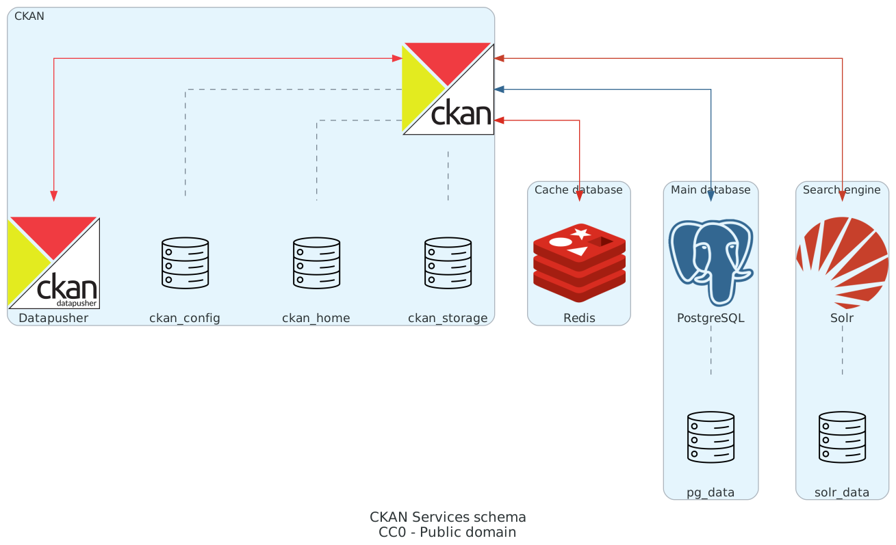
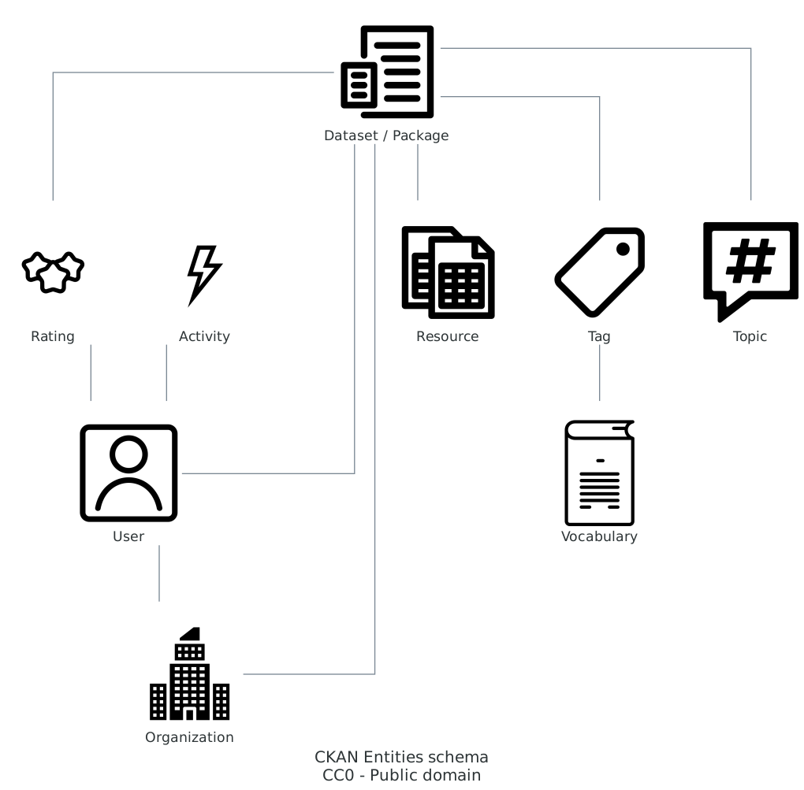

Panoramica
Contents
Panoramica#
CKAN è un software monolitico, ma con una struttura modulare del codice.
Separa la gestione dei dati dalla logica di business, ma non il backend dal frontend.
Fa uso di una serie di database specializzati per offrire funzionalità avanzate: persistenza e query dei dati, ricerca avanzata anche full-text, cache delle risposte.
Offre una Web API molto ricca per l’integrazione con altri sistemi, per cui può essere anche usato come Headless CMS (vedi il progetto Portal.js).
Servizi#
Il servizio principale è CKAN stesso, un’applicazione Python / Flask / Jinja2.
I dati sono gestiti all’interno di un database PostgreSQL, in particolare nella sua versione PostGIS.
Il motore di ricerca interno è gestito da Solr (vedi documentazione), mentre Redis è usato come cache delle risposte HTTP per velocizzare la navigazione e limitare le query al database.
Per le funzionalità di gestione e preview delle risorse è consigliato anche l’uso di Datapusher, un componente che indicizza automaticamente i dati nel database per renderli ricercabili.

Entità#
Ad alto livello, le entità rappresentate in CKAN sono le seguenti:
Dataset (storicamente chiamato anche package) - Si tratta dei set di metadati
Resource - Si tratta dei dati veri o propri o dei riferimenti a essi (inclusi URI a web service)
Group - I dataset possono essere inseriti in gruppi personalizzati (es. per categoria o argomento)
Tag - A ogni dataset possono essere associate tag per una sua categorizzazione tematica
Vocabulary - Le tag disponibili possono far parte di vocabolari controllati personalizzati (vedi documentazione)
User - Sono gli account utente che possono operare in scrittura (per esempio per creare o modificare dataset), sono previsti due ruoli con privilegi differenziati: publisher e administrator
Organization - Si tratta delle organizzazioni titolari dei dataset pubblicati, gli utenti publisher possono essere associati alle organizzazioni
Activity - Ogni azione di un utente è registrata in un log di attività
Rating - Gli utenti autenticati possono dare esperimere un voto di apprezzamento o meno per un dataset

Python#
Python is a programming language that lets you work quickly and integrate systems more effectively.
Sito ufficiale: python.org.
Tutorial: lab/tutorials/python/ (repo).
TIP - Lavorare con Python significa installare molti pacchetti aggiuntivi, per cui è altamente raccomandato usare ambienti virtuali e un gestore di pacchetti evoluto come Poetry.
TIP - Se si vuole mantenere la compatibilità con sistemi che usano ancora il
requirements.txtinvece del nuovopyproject.tomlsi può effettuare la conversione conpoetry export --without-hashes --format=requirements.txt > requirements.txt.
Flask#
Flask is a lightweight WSGI web application framework. It is designed to make getting started quick and easy, with the ability to scale up to complex applications.
Sito ufficiale: flask.palletsprojects.com.
Tutorial: lab/tutorials/flask/ (repo).
Jinja#
Jinja is a fast, expressive, extensible templating engine. Special placeholders in the template allow writing code similar to Python syntax. Then the template is passed data to render the final document.
Sito ufficiale: jinja.palletsprojects.com.
Tutorial: lab/tutorials/jinja/ (repo).
Database#
I database sono servizi esterni la cui esecuzione è indipendente da CKAN. Possono essere installati ed eseguiti sulla stessa macchina, all’interno di container opportunamente orchestrati, in un cluster in cloud, o in ambienti misti (es. CKAN, Solr e Redis in container, ma PostgreSQL on-premise).
PostgreSQL#
PostgreSQL is a powerful, open source object-relational database system with over 30 years of active development that has earned it a strong reputation for reliability, feature robustness, and performance.
Sito ufficiale: postgresql.org.
Tutorial: lab/tutorials/postgresql/ (repo).
PostGIS#
PostGIS is a spatial database extender for PostgreSQL object-relational database. It adds support for geographic objects allowing location queries to be run in SQL.
Sito ufficiale: postgis.net.
Per supportare di default i dati geospaziali e funzionalità di ricerca geografica dei dataset, per le ultime versioni di CKAN si consiglia l’uso di PostGIS invece che di PostgreSQL base.
Tutorial: lab/tutorials/postgis/ (repo).
Redis#
The open source, in-memory data store used by millions of developers as a database, cache, streaming engine, and message broker.
Sito ufficiale: redis.io.
Tutorial: lab/tutorials/redis/ (repo).
Solr#
Solr is the popular, blazing-fast, open source enterprise search platform built on Apache Lucene.
Sito ufficiale: solr.apache.org.
Tutorial: lab/tutorials/solr/ (repo).
React (bonus)#
A JavaScript library for building user interfaces.
Sito ufficiale: reactjs.org.
Tutorial: lab/tutorials/react/ (repo).
Warning: CKAN doesn’t use React, this bonus tutorial shows the use of docker for frontend development and production deployment.
Command Line Interface (CLI)#
Oltre all’interfaccia grafica e alle Web API, esiste anche un’interfaccia a linea di comando molto versatile: ckan (storicamente si chiamava paster, vedi documentazione).
Tutte le informazioni su un’istanza di CKAN sono contenute nel file di configurazione ckan.ini (storicamente production.ini, nome ancora presente nel Dockerfile ufficiale),
da cui ckan prende tutte le informazioni necessarie per interagire con l’istanza in esecuzione.
Modello di comando: ckan -c /etc/ckan/default/production.ini command [subcommand] [...options].
Esempio: ckan -c /etc/ckan/default/production.ini user list.
Nel caso di un’istanza eseguita all’interno di un Docker container gestito con Docker Compose, dall’host è possibile eseguire lo stesso comando con il prefisso docker-compose exec [nome container].
Documentazione completa: docs.ckan.org/en/2.9/maintaining/cli.html.